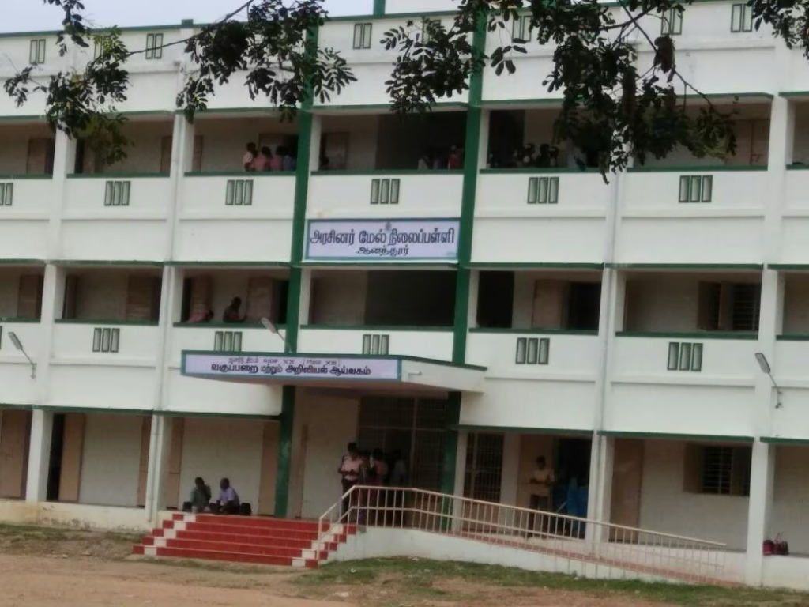
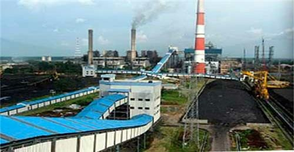

Township Infrastructure
Discover the robust facilities and modern amenities that power the heart of Neyveli.
Township Administration
The Neyveli Township Administration operates from this central hub, ensuring the seamless delivery of civic services, maintenance of public infrastructure, and the overall well-being of the residents. Equipped with modern facilities, it is the backbone of the city's operational efficiency.
View Civic Services
Educational Excellence
Neyveli is home to premier educational institutions that foster academic brilliance. With state-of-the-art classrooms, expansive playgrounds, and dedicated faculty, schools shape the future leaders of tomorrow.
Explore Schools & Colleges
Advanced Healthcare
Ensuring the health and safety of its citizens, Neyveli boasts comprehensive medical facilities. The township's primary hospitals are equipped with specialized wards, modern diagnostic labs, and 24/7 emergency services, providing high-quality care to all.
View Medical Facilities
Industrial Plants
The skyline of Neyveli is defined by its massive industrial plants. As a pivotal energy producer, these thermal power stations convert mined lignite into electricity, powering not only the township but also significantly contributing to the national grid.
Explore Industries